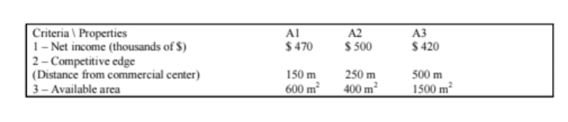
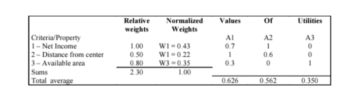
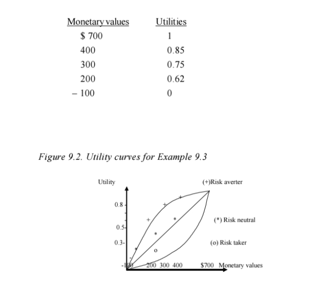
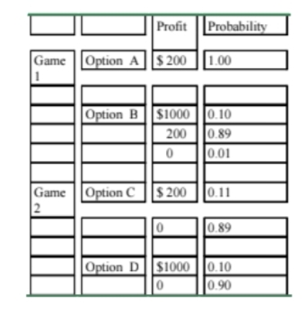

the optimistic decision; since it minimizes the highest income, while the Max/ Min principle is know as the pessimistic decision, since it maximizes the lowest income.
a. Decision using the Max/Min principle.. Using the Max/Min principle, one should “choose the strategy offering the highest value among the lowest values of each strategy”, that is, Max/Min = Maximum (Minimum value of A1 and A2) = Max (460, 450) =460. This value refers to alternative A1.
b.Decision using the Min/Max principle.According to this criteria, one should “choose the strategy offering the lowest value among the highest values of each strategy”, that is, Min/Max = Min (470, 500) = 470. This value also refers to alternative A1. Thus, we have Min/Max = Max/Min, in this example.
Decision with No Risk and More Than One Criterion or Goal
When a decision problem has several criteria or goals expressed in different units, (for instance, expected income, distance, etc.) it is necessary to transform each one of these values into the same unit of measurement. In a given decision, the value of income cannot be mixed with other objective, such as competitive edge, (expressed by the property’s location), comfort (the number of rooms, visibility, etc.), or area (in square meters).
All these values should be transformed into the same unit called satisfaction level or utility, whose values vary from 0 (to the worst level of satisfaction) to 1 (to the best level of satisfaction) (Luce & Raiffa, 1957; Goodwin & Wright, 1996).
Another difficulty refers to the conflicting nature of these goals, as in the case of minimization of cost and maximization of employee labor conditions, because the best solution to minimize cost usually may not maximize labor conditions. The three goals (net income, competitive edge and available area) of Example 9.2 are to be maximized, but the best solutions for each goal correspond to different alternatives.
There is no solution fully satisfying all goals considered. A consensual solution based on the Pareto’s principle is usually adopted.
The Pareto’s Principle (Goicoechea et al., 1982; Hillier & Lieberman, 1980)
If a solution x* of a problem with k goals fk (x) is such that it is not possible to find any solution x with fk (x) better than fk (x*) for all k goals, then x* is an optimum Pareto solution.
Example 9.2: Select a Property Considering Net Income and Two Kinds of Benefits (adapted from Goodwin & Wright, 1996)
Company XYZ studies three alternatives for buying a property for a new branch office, according to three different goals: net income, based on cash payment, competitive edge, given by the distance of the property from the commercial center, and total available area. We have the following values:
Establishing Utility Values
The worst and the best values of each goal should correspond to values 0 and 1 of the utility function, respectively. Utilities for the intermediate values are determined using different utility curves and will be explained in the next chapter.
For example, we can have the following utility values:
| Net Income | Utility | Distance | Utility | Available Area | Utility | |
|---|---|---|---|---|---|---|
| Best Value | $ 500 | 1 | 150m | 1 | 1500 m2 | 1 |
| $ 470 | 0.7 | 250m | 0.6 | 600 m2 | 0.3 | |
| Worst Value | $ 420 | 0 | 500m | 0 | 400 m2 | 0 |
Weighting the Criteria or Goals
In general, the three criteria should not be given equal weights, and the company should choose the criterion with the greatest importance. If, for the company, Net Income is the most important criterion or objective, then it gets a relative weight equal to 1.
Each of the other criteria should get a relative weight according to the answer given to the following question:
What is the importance of this criterion, in percentage terms, in relation to the Net Income?
If the answer is “lower than 20%,” possibly this criterion could be discarded, simplifying the solution of the problem.
The following table shows the relative and the normalized values of weights, the utility values for the three properties, and the weighted average:
Thus, property A1 should be chosen according to the best value of weighted utility average.
Sensitivity Analysis
The value of weights may alter the decision result. If we attribute a zero weight to Net Income and the same relative weights of 0.50 and 0.80 are kept for the two other criteria, the property chosen will be the property A3.
In order to analyze the variation of the three weights it is possible to use a two dimensional chart, placing the variation of the sum of two of the three weights (for instance, p = W2 + W3) on the horizontal axis, and the variation of the utility
average on the vertical axis. The third weight W1 corresponds to the value 1 – p. For instance, for p 0.5, the best decision is to buy property A2, while for p between 0.5 and 0.9, the best decision is property A1. For p 0.90 and weight (Income) W1 0.1, the best decision is property A3.
Subjective Perception of Risk
(Excerpted from: Subjective Perception of Risk, Mark Fenton-O’Creevy and Emma Soane, Financial Times, Mastering Risk, Part I, May 2, 2000, pp. 14-15).
Risk perception is a complex and subjective process. In finances, risk is usually considered as a combination of the values of expected loss or gain and the variability of this expected result. Human perception of risk acts in a different way. There are two important risk components affecting our perception: the fear factor — referring to fear of potential result — and the control factor — referring to the level of control over events. For instance, risk perception is very high in a nuclear accident due to the fear factor or, it is higher for a car passenger than the driver, due to control perception. In the financial market, both factors are important –fear and anticipation of losses often control our actions. One financial broker stated that “we often make decisions based more on the fear of losing, than the hope of winning.”
The largest risk perception component is in how we perceive gain and loss. Persons in a winning position of a game increasingly have an aversion to risk, since they want to keep their gains, while individuals in a losing position are more willing to take risks, because they have less to lose.
However, what we perceive as gain or loss depends on the personal standpoint, which changes according to the situation and over time.
Decision Problem Under Uncertainty or Risk
Economic and financial theories often make sure that a person makes optimum use of available intuition as a basis for a rational decision, but research and verification of daily behavior shows that human behavior is significantly different from this statement.
In many decision problems, the states of nature occur with a certain level of uncertainty known as risk. It is then no longer possible to apply the Min/Max
or Max/Min principle since the risk occurrence with different probabilities does not allow the choice of a greater or smaller gain value. One needs to obtain the average or expected values.
In order to establish the probability values representing the uncertainty level or risk, the decision maker must receive information by (Charan, 2001; Edwards, 1975; Li & Ye, 1999):
- consulting experts,
- gathering data,
- bibliographical research on the issue, etc.
In this chapter, the application of sensitivity analysis and the use of different types of utility function are explained with more detail, using the Example 8.1 shown in Chapter VIII as an example of the descriptive model of decision.
Example 9.3: Decision with Uncertainty (presented as Example 8.1 - Descriptive model of decision, in Chapter VIII)
The following table shows the average return (profits or losses for a certain investment value) associated to the following strategies:
A1: Investing in savings accounts with fixed earnings of $300 per periodA2: Investing in fixed earnings funds
A3: Investing in the stock market
The average return varies according to the economic situation considering the possible economy states (recession, stability, or expansion).
| Strategy A1 | A2 | A3 | ||
| Possible states of the economy | Probabilities | Savings | Funds | stocks market |
| S1 :Recession | p1 = 0.40 | $300 | $400 | -$100 |
| S2:Estability | p2 = 0.40 | $300 | $300 | $200 |
| S3:Expansion | p3 = 0.20 | $300 | $200 | $700 |
Decision based on the highest average or expected monetary value.
As we already know by the example of descriptive model of decision shown in Chapter VIII, the Expected Monetary Values (EMV) of the alternatives are:
EMV1 = 0.40 x 300 + 0.40 x 300 + 0.20 x 300 = $300
EMV2 = 0.40 x 400 + 0.40 x 300 + 0.20 x 200 = $320
EMV3 = 0.40 x (-100) + 0.40 x 200 + 0.20 x 700 = $180
The best decision is strategy A2, followed by A1, and finally A3.
Figure 9.2. Sensitivity Analysis Chart: Best decision alternative for several values of probabilities p1, p2, and p3 = 1 –p1 –p2, for example 10.1. (adapted from Clemen & Reilly (2001)

Sensitivity Analysis
It is helpful to check the variation of expected values for different probability values p1, p2, and p3, thus getting a chart that allows the analysis of strategic limits of investments risks.
In order to assess value variations for p1, p2, and p3, the chart suggested by Clemen and Reilly (2001) is adopted and shown in Figure 9.2. Since there are three variables p1, p2, and p3, the values for p1 are placed on the horizontal axis and p2 on the vertical axis. Values of p3 are implicitly expressed by the property p1 + p2 +p3 =1. For instance, if p1 = 0 and p2 = 0, then p3 = 1; if p1 = 0.2 and p2 = 0.2, then p3 =0.6, and so on.
In case of more than three risk possibilities, the sensitivity assessment using a chart becomes impossible. In Sensitivity Analysis chart of Figure 9.2, each point (p1, p2) contains the name of the best Aj alternative for a given risk value (p1, p2, p3). For instance, in the numerical example seen, we have p1 = 0.4, p2 = 0.4 and p3 = 0.2 with the expected EMV1 values = 300, EMV2 = 320 and EMV3 = 180. Thus, point (0.4, 0.4) will have A2 as the best alternative.
Once the best expected value is obtained for all different probability values, expressed by the points (p1, p2) in the chart, the strategic regions where each Aj investment alternative is the best solution are easily known.
The Role of Utility Function
A “decision based only on expected monetary values” may not be perfect since it does not analyze every earning possibility, such as highest profit or worst loss. Besides, expected value based on numeric values such as money, dimension, or age does not allow the inclusion of nonquantitative criteria such as “client satisfaction”, “product quality”, etc. The decision based on the “level of satisfaction or utility function,” associated to each quantitative or non quantitative (or qualitative) value, best expresses the decision alternatives.
In the Example 9.3, a decision should consider other factors involving the decision maker’s interests. Using the expected monetary values EMV, a player or decision maker should never get the highest earning of $700 given in alternative A3, even at the risk of losing (-$100). Utility function transforms quantitative and qualitative values in corresponding utility values, allowing better analysis of complex decision problems.
Risk Neutral Decision-Making
If the decision maker is risk neutral, he or she would use the risk neutral curve of Figure 9.3 and would probably not choose alternative A3, where $700 is the highest earning value and $100 represents a loss.
A risk neutral decision maker is usually a midsized or large organization with long experience in its activity. Thus, data placed on the decision matrix were analyzed by a consultant team, and there would be no reason to doubt the linear behavior of these values.
Risk Averter Decision-Making
Using the risk aversion curve of Figure 9.3 for the Example 9.3, one may have, for instance:
The average values using these utility values are:
EMV1 = 0.4 x 0.75 + 0.4 x 0.75 + 0.2 x 0.75 = 0.75;
EMV2 = 0.4 x 0.85 + 0.4 x 0.75 + 0.2 x 0.62 = 0,764; and
EMV3 = 0.4 x 0 + 0.4 x 0.62 + 0.2 x 1 = 0.448.
Risk averter decision makers wishing to maximize their personal satisfaction with the utility function would choose alternative A2. A risk averter person or organization is one with small amount of resources or with little experience in this kind of decision. A risk averter cannot count on counseling or assistance from other people or organizations to explain the pros and cons of the alternatives presented. However, there are different risk aversion levels, depending on whether there is greater or lesser knowledge of the problem. For instance, when buying real state, both the homemaker who wishes to buy a house and the real estate broker may be risk averters. The homemaker’s risk aversion level is usually higher than the broker’s.
Risk Taker Decision-Making
By using the curve expressing “risk taker or risk preference” in Figure 9.2, the decision maker may get, for instance, the following expected earnings: EMV1 = 0.18, EMV2 = 0.217 and EMV3 = 0.25 and thus could choose alternative A3, where there is highest risk, but with earning possibilities of $700. A person or organization prefers to take risks when believes that the reward is worth the risk or when the time frame limit enforces a risky alternative.
Decision Model with Learning, Using Additional Information
Learning process in descriptive models of decision can be made using the adaptive or feedback model of statistics. The best known learning process is made using Bayes’ Theorem, in which prior values of probabilities can be updated by additional information collected through a new sampling process (Shamblin & Stevens, 1980; Hillier & Liebermann, 1980; Takahashi, 1997). This process can be repeated many times, renewing the values of probabilities at each step of decision. The following Example 9.4 illustrates this process.
Example 9.4. Renewing Probabilities in an Opinion Survey
Senator Bill Hernandez (BH) is a candidate for the next presidential election. His supporting committee hired an opinion research company to conduct, in each month prior to the election day, a nationwide opinion survey about the preference of the electoral population, whether preferring Senator BH or the other adversary. The results of the last research, expressed in probability terms were: P (S1)= P(BH wins)= 0.3, P (S2)= P (there is a tie)= 0.3, and P (S3)= P (Adversary wins)= 0.4.
After each round of the research, one of the following decisions must be taken by the supporting committee:
A1 = {Raise more funds for the campaign} or
A2 = {Invite the other candidate for a debate in nationwide TV network} or
A3 = {Continue the campaign as previously planned}.
The payoff values in terms of numbers of voters estimated to be won or lost for each probability value and decision alternative, are:
| Decision A1 | A2 | A3 | ||
|---|---|---|---|---|
| Results Sj | Probability | Raise more funds | Debate in TV network | Continue the campaign |
| S1 :BH wins | 0.30 | 100,000 | 100,000 | 50,000 |
| S2: Tie | 0.30 | 150,000 | 200,000 | -50,000 |
| S3:Other candidate wins | 0.40 | 50,000 | 150,000 | -200,000 |
Average values of win or loss of number of voters for each decision alternative are:
EA1 = 0.3 100,000 + 0.3 150,000 + 0.4 50,000 = 95,000;
EA2 = 0.3 100,000 + 0.3 200,000 + 0.4 150,000 = 150,000; and
EA3 = 0.3 50,000 + 0.3 (-50,000) + 0.4 (-200,000) =(-80,000).
Thus, the best decision alternative is A2.
Fifteen days after the nationwide survey, a small scale opinion survey including only the major capital cities, is conducted in the sense of updating the results ofthe previous survey. The result of this small scale survey, called additional information F, predicted that F = {BH wins in the major capital cities}.
Based on this addition information F, the opinion research company will predict whether or not candidate BH wins. The difficulty is that the result of this small scale survey, made only in major capital cities, does not always coincide with the final result of the election.
In the past, the supporting committee observed that 60% of the time, this additional research predicted that “BH wins in major capitol cities”, then the election was actually won by BH. This fact can be expressed as the conditional probability P (F / S1)= 0,6.
On the other hand, 40% of time the additional research predicted that “BH wins in major capitol cities”, the election ended in a tie between the two candidates, while only 20% of time, the election was actually won by the other candidate. Then, for the additional information F we have the other two conditional probabilities: P (F / S2) = 0.4 and P (F / S3)= 0.2. Using probability formula we have:
P (F) = P {BH wins in major capitol cities}= 0.3 0.6 + 0.3 0.4 + 0.4 0.2 = 0.38.
New probabilities values (known as posterior probabilities) updated by this additional information F, according to Bayes’ Theorem are:
Prob(S1 / F)= (0.3 0.6)/ 0.38 = 0.474,
Prob(S2 / F)= (0.3 0.4)/ 0.38 = 0.316, and
Prob(S3 / F)= (0.4 0.2)/ 0.38 = 0.210.
The new payoff table using these probabilities is:
| Decision A1 | A2 | A3 | ||
|---|---|---|---|---|
| Results Sj | Probability | Raise more funds | Debate in TV network | Continue the campaign |
| S1 :BH wins | 0.474 | 100,000 | 100,000 | 50,000 |
| S2: Tie | 0.316 | 150,000 | 200,000 | -50,000 |
| S3:Other candidate wins | 0.210 | 50,000 | 150,000 | -200,000 |
After this additional information F, average values of win or loss of voters for each decision are:
EA1 = 0.474 100,000 + 0.316 150,000 + 0.210 50,000 = 105,200,
EA2 = 0.474 100,000 + 0.316 200,000 + 0.210 150,000 = 165,800, and
EA3 = 0.474 50,000 + 0.316 (-50,000) + 0.210 (-200,000) = -34,100.
Best decision is again A2, and the additional information F = {BH wins in major capital cities} reinforces this strategy.
Each month, after the results of the nationwide opinion survey, this updating process can be repeated.
Additional Problems That Must Be Considered in Structuring a Strategic-Decision-Model
It is important to remind us that in a strategic-decision-making procedure many other factors become more and more difficult and complex in a systematic way to structure the decision process. The systematic structuring methodology presented in the previous sections are valid for decision problems of tactical or operational levels and must be considered as a starting procedure for strategic decision problems.
Many types of difficulties must be considered when a strategic-decision problem is to be structured. These difficulties are reported by researchers in the form of paradoxes or hidden traps that reflect the different aspects of human behavior under uncertainty, risk or complexity to determine a consistent list of decision alternatives.
Most of the difficulties are related to the problem of how an individual or group’s risk attitude can change depending on the way the decision problem is posed. A person may have different attitudes (risk neutral, risk preference or aversion to risk) to lose a certain amount of money during the initial and final phase of a gamble or, when the total amount of money available to play the game or invest in the stock market is small or large.
A person’s or group’s attitude can change depending on many factors such as time, financial situation, or responsibilities according to the problem to be solved. This fact is known asframing problem because different persons can see different frames (of values or structures), simplifying the reality
The effects of hidden traps mentioned in a Case Study, as well as Allais or Ellsberg’s paradox can be minimized forming different decision alternatives given by different groups of persons. These alternatives are discussed and a final decision can be reached by negotiation or by the use of votes. St. Petersburg’s paradox is concerned with the possibility of unknown value of probability expectation but the use of utility value can help to solve the problem.
The Paradoxes
St. Petersburg’s paradox (Takahashi, 1997; Clemen & Reilly, 2001; Goodwin & Wright, 1996)
Let us consider the following two types of coin tossing game which must be held until the first occurrence of “head.”
Game I:
If the first head occurs in the first trial, the player receives $2; if it occurs in the second trial, he or she receives $4, and son on, until the occurrence of head in the k-th trial, when he or she receives $2k.
Game II:
Whichever trial occurs head for the first time, the player receives a fixed amount of money $W. Which one of the games must a player select?
Game II gives always the Expected Value E2 = $ W.
Expected Value of Game I is E1 = , according to probability theory. Thus, the profit in Game I is, at least theoretically, greater than any value of profit in Game II. But in Game I, we assume that the profit is greater than any amount $W if the coin is tossed an infinite number of times. What is the meaning of “infinite number of times”? The answer is the number K of trials of a coin until the first occurrence of a head has a geometric distribution with expected value E(K) =
1/p, or E(K) = 2, for the case of the coin, where p=1/2. Thus Game II will be preferred when the expected monetary value $ W is greater than $2, which is a value far from infinite.
This paradox can be solved using the utility function, that shows that game II must be preferred when the monetary value $W is more than $4, which satisfies the decision based on the expected value of the geometric distribution.
b. Allais’s Paradox (Takahashi, 1997; Goodwin & Wright, 1996; Raiffa, 2002)
This paradox presents the following two games in which decision based on utility values reaches contradictory relations.
Questions
Which of the two options (A or B) would you choose in Game I?
Which of the two options (C or D) would you choose in Game II?
Game 1:
Usually, due to the fixed profit of Option A, persons consider that the utility value of A is greater than the utility value of B, or:
U(A)>= U(B), or
U(200)>= 0.10 x U(1000)+ 0.89xU(200)+ 0.01x U(0) and then
0.11 x U(200)>= 0.10 x U(1000) + 0.01 x U(0).
Game 2:
The probability of profit $200 of option C is similar to the probability of profit $1000 of option D. It seems reasonable that persons prefer a greater profit ($1000 versus $200). Using utility we have:
U(C)= U (D)or
0.11 x U(200)+ 0.89 x U(0)= 0.10 x U(1000)+ 0.90 x U(0)and then
0.11 x U(200) = 0.10 x U(1000)+ 0.01 x U(0).
Thus, this paradox presents two contradictory inequalities, which may be explained by the fact that utility theory does not attempt to describe the way in which people choose a utility value.
c. A final paradox (Ellsberg’s Paradox) solves Allais’s paradox considering different attitudes of persons’ preference with respect to uncertainty and risk: neutral to risk, aversion to risk, and preference to risk, relaxing the fundamental law of probability theory, where the sum of the probabilities of all the events must be equal to 1.
Conclusions
In this chapter, steps to structure a decision model through a systematic way, based on the PDCA (Plan, Do, Check, and Action) principle, were presented. The decision matrix and decision tree are tools used to organize a starting model of a strategic-decision problem. A decision matrix is used to represent a one-stage decision problem while a decision tree is used to represent a sequence of decision-making stages.
Examples of problems to select the best alternative under no risk, uncertainty, or risk situation were presented. For all cases, decision problems with single